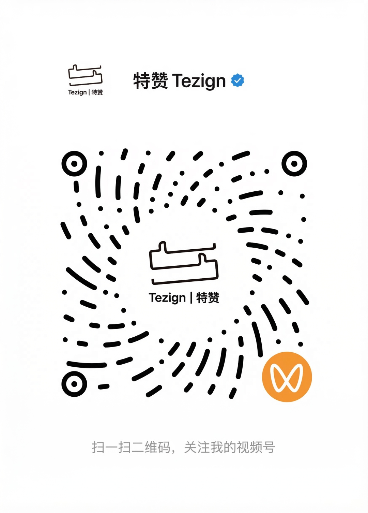

麻省理工学院媒体实验室（MIT Media Lab）去年发布了一份报告《The GenAI Divide》。

MIT 研究团队追踪了 300 多个公开 AI 项目，做了 52 场高管深度访谈，收集了 153 份企业调研。
核心结论：「95% 的企业 AI 项目，没有产生任何可衡量的商业回报。」
全球企业在生成式 AI 上烧了 300-400 亿美元。
95% 血亏。真正从里面赚到钱的，只有 5%。

这份报告发出来后，直接引发了一波 AI 泡沫恐慌。英伟达股价都跟着跌了一轮。
高管们总喜欢把失败归咎于监管和模型性能。
但问题其实不在模型。
GPT-5.4、Claude Opus 4.6、Gemini 3.1 Pro、GLM-5、Qwen 3.5，能力差距在缩小，谁也甩不开谁太多。
MIT 的判断是，「企业根本不知道该怎么把 AI 塞进自己的工作流里。」
模型够聪明了。缺的是另一样东西。
举个例子。
你让一个客服 Agent 处理客户续费。它查了一圈，建议给 20% 的折扣。
但公司政策上限是 10%。
AI Agent 从运维监控系统拉了三条严重故障记录，从客服系统拉了一封「不修就退订」的邮件，又找到了上季度总监批过类似特例的记录。
它把这些证据打包提交给财务。财务批了。
CRM 里最后只留下一个数字，20%。
为什么批？谁批的？依据什么先例？当时什么情况？
全都消失了。
这个例子不是我编的。硅谷知名风投 Foundation Capital（Netflix、Uber 早期投资方）去年 12 月发表了一篇长文，开头就是这个例子。
他们的原话是，「系统记录发生了什么，但没有记录为什么发生。推理过程可能在办公软件、Zoom 会议、邮件和走廊的闲聊里。」
AI 拿不到这些东西，当然做不了真正的决策。
数据（Data）和上下文（Context），不是一回事。
「数据」是数据库里能查到的东西。哪个客户、买了什么、花了多少钱。结构化、标准化、随时能查。
「上下文」是做决定时脑子里想的东西。为什么给这个客户破例、上次类似情况怎么处理的、谁有权限审批。
数据在系统里。上下文在人的脑子里。
前特斯拉 AI 总监 Andrej Karpathy 去年 6 月发了一条推文。230 万次阅读。
别再叫提示工程（Prompt Engineering）了，应该叫上下文工程（Context Engineering）。
Context engineering is the delicate art and science of filling the context window with just the right information for the next step.

给模型喂什么上下文，可能比模型本身更重要。
毕竟，模型是标准品。上下文才是壁垒。
Foundation Capital 的合伙人 Jaya Gupta 和 Ashu Garg 想得更远。
2025 年 12 月 22 日，他们发表了一篇文章，《Context Graphs: AI's Trillion-Dollar Opportunity》。
下一个万亿美元机会。

他们提出了一个概念叫决策痕迹（Decision Traces）。
就是企业在做每一个决定的时候，依据了什么规则、谁批准的、参考了哪个先例、当时的背景是什么。
把这些决策痕迹持续记录下来，彼此连接，就形成了一个上下文图谱（Context Graph）。
别把它当成又一个数据库。它是企业「怎么做决定」的活地图。
如果 Agent 能调用这张决策地图，AI 就不只是替你写邮件、做 PPT 了。它能替你做决策。
一旦 AI 能做决策，今天所有卖「人工决策辅助」的 SaaS 公司，都得重新想想自己还有什么用了。
微软 CEO Satya Nadella 在 BG2 播客上也聊到了类似的观点。SaaS 本质就是一个数据库加一层业务逻辑，说白了就是增删改查。AI Agent 会把业务逻辑这一层接管掉。
Agent 一旦学会了规则，软件本身就不重要了。
过去四十年的企业软件，本质上在做一件事。
记录。
CRM 记录客户、ERP 记录交易、HR 系统记录员工。这叫记录系统（System of Record）。
后来加了一层分析。有了报表和仪表盘，能看趋势、做预测。
但分析 ≠ 行动。
现在，第三层正在出现。
不只存「发生了什么」，还要留下「为什么这么决定」。然后让 Agent 基于这些上下文，直接做决策、执行任务。
从记录系统（System of Record），到上下文系统（System of Context），再到行动系统（System of Action）。
全球最权威的 IT 研究机构 Gartner 做了两组预测。
到 2026 年底，40% 的企业应用会嵌入 AI Agent。2025 年初这个数字还不到 5%。
超过 40% 的 Agentic AI 项目，会在 2027 年前被砍掉。

一半企业在拥抱 Agent，一半 Agent 项目会失败。
区别在哪？
有没有给 Agent 搭建好那层上下文。
面对同一个问题，不同公司选了不同的路。
Salesforce 的思路是全家桶。
它推出了一套叫 AELA 的方案（Agentic Enterprise License Agreement）。逻辑很简单，你已经在用我的 CRM，我直接在上面加 Agent 层，天然就有上下文。
但企业的上下文不只在 CRM 里。
Salesforce 给了工具，用不用得起来还得靠企业自己。上下文工程远不是「拿来即用」那么简单，这一层在它的方案里是缺失的。
Palantir 走的是另一个极端。
它安排 FDE（Forward Deployed Engineers，前线部署工程师）驻扎在客户公司，手动把业务逻辑翻译成 Agent 能理解的语言。
效果好，但 FDE 的瓶颈也很明显。高度依赖顶尖人才，成本高、周期长，做一家算一家，没法规模化。
还有第三条路。
为企业构建独立的上下文层，然后基于这一层往上搭。接什么模型、怎么编排 Agent 技能、怎么在组织里落地，全包。从上下文到 Agent 到业务闭环，全栈交付。

不依附于任何一个 SaaS。AI Agent 不论接什么系统，都从同一个上下文层拿信息。
国内的「特赞科技」走的就是这条路。
2024 年 Gartner 评选中国生成式 AI 领域 Cool Vendor，全报告只选了 3 家。特赞是其中之一。
他们做了一套叫 GEA（Generative Enterprise Agent） 的企业级智能体架构。底层是企业上下文管理系统 Context System，由特赞的 DAM 来承接落地。从企业已有的品牌资产、内容数据、决策记录中，把上下文构建出来，让 Agent 能直接调用。

就在上周，Coursera 联合创始人、斯坦福教授吴恩达也发布了一个开源工具叫 Context Hub，做的事情本质上一样，给 Agent 提供一本越来越聪明的手册。Agent 发现了一个解决办法，可以保存下来，下次不用重新摸索。
这其实就是「上下文系统」的另一个名字。
特赞这套 GEA 目前面向企业端定制化部署，也有面向普通用户的轻量级产品，比如用户研究智能体 atypica，按 token 计费。

模型可以换，Agent 可以重建。
但企业几十年积累的决策上下文，谁都搬不走。
这是特赞的逻辑，也是 Foundation Capital 说的「万亿机会」的底层逻辑。
2025 年，全球企业花了 400 亿美元买 AI。
95% 没拿到回报。
不是 AI 不行。
是大多数企业，还在用数据喂一个需要上下文的系统。
本文为「特赞科技」特约合作内容。
如果你的企业也在考虑怎么把 AI 真正用起来，特赞官网可以预约首批 GEA 企业级智能体的 demo，还有免费的企业诊断和咨询。
传送门：https://www.tezign.com/contact

3 月 20 日，特赞将举办 GEA 企业级智能体发布会。想看完整产品演示和落地案例，可以先去视频号预约👇

我是木易，Top2 + 美国 Top10 CS 硕，现在是 AI 产品经理。
关注「AI信息Gap」，让 AI 成为你的外挂。